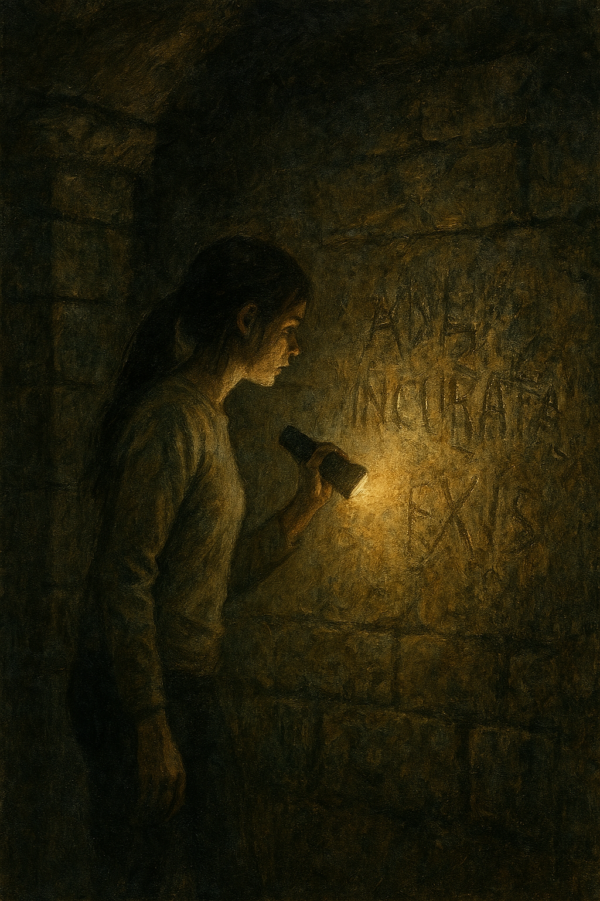

Sara went down to the basement alone. The air was thicker, thick with dampness and the smell of ancient mold. The beam of her flashlight illuminated walls covered in marks, as if someone had tried to scratch words into stone.
In the center of the room, an eyeless doll rested on a wooden chair. Behind it, a dozen more dangled from the ceiling, tangled threads and twisted bodies. The silence was total, broken only by a steady drip.
Amid the shadows, a small desk appeared with an open book. The letters moved, as if breathing, changing shape before her eyes. The dolls slowly turned their heads toward her, all at the same time.
The book seemed to emit a faint pulse, like a beating heart. A strange sensation ran through the room: an ancient desire, a broken promise. Something deep within the house was asking to be heard.